CANON VISUAL VAULT
Official high-resolution master gallery for Kei (京). Inspect all canon illustrations, combat action records, and classified technical blueprints in uncropped 4K Ultra-HD.
THE TRIPLE CONFLUENCE
Chronological records of Kei's cosmic convergence — from his human baseline to the synthesis of the Solar Bastion and Abyssal Maw into the Dual Sovereign.
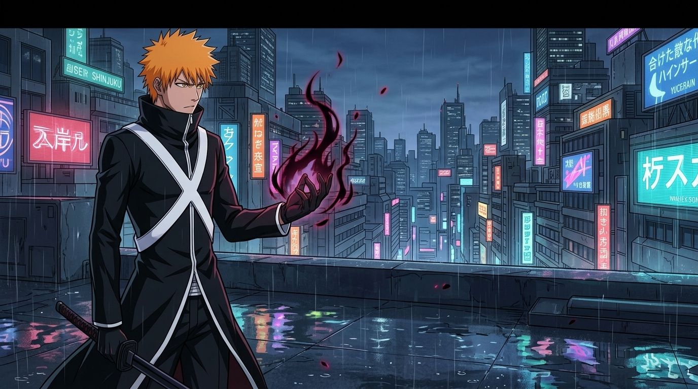
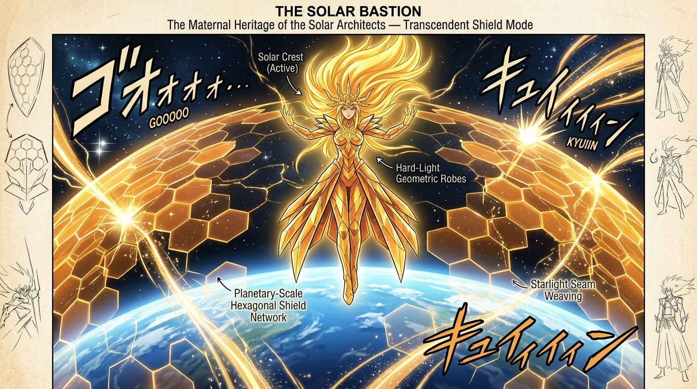
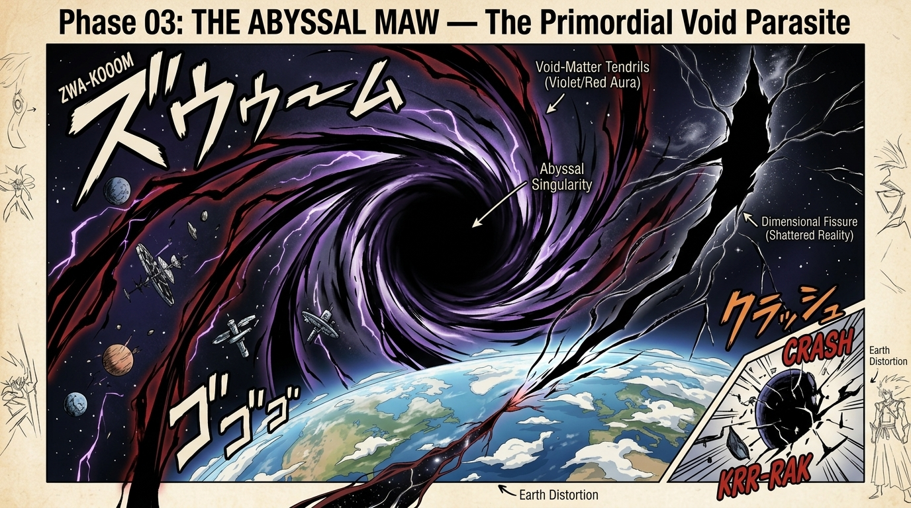
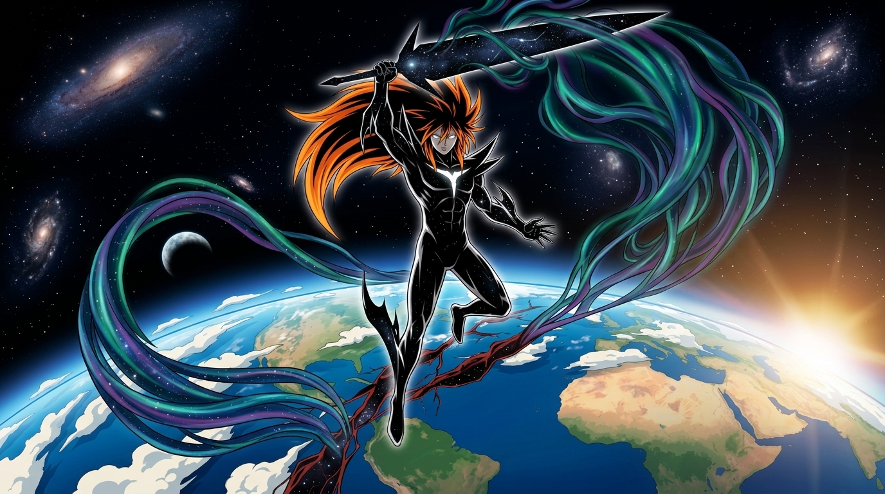
TERRESTRIAL DEFENSE COMBAT ARCHIVES
Surgical, high-velocity duelist operations at Mach 20+ to 0.94c slipstream velocity. Urban interceptions with zero collateral dispersion.
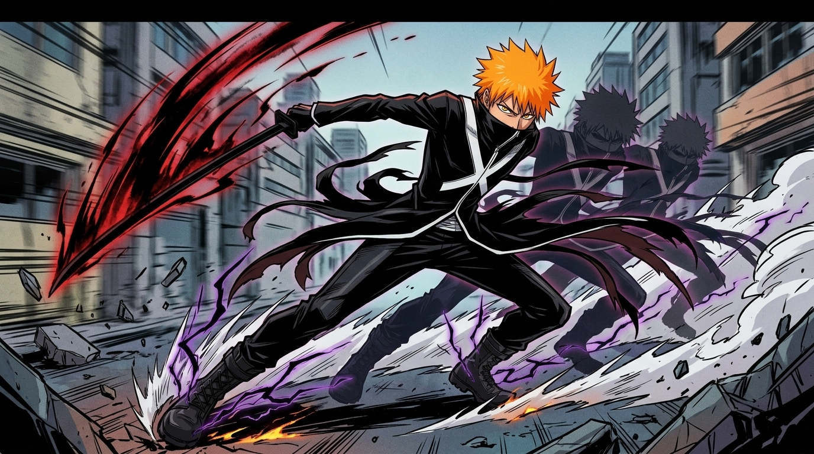
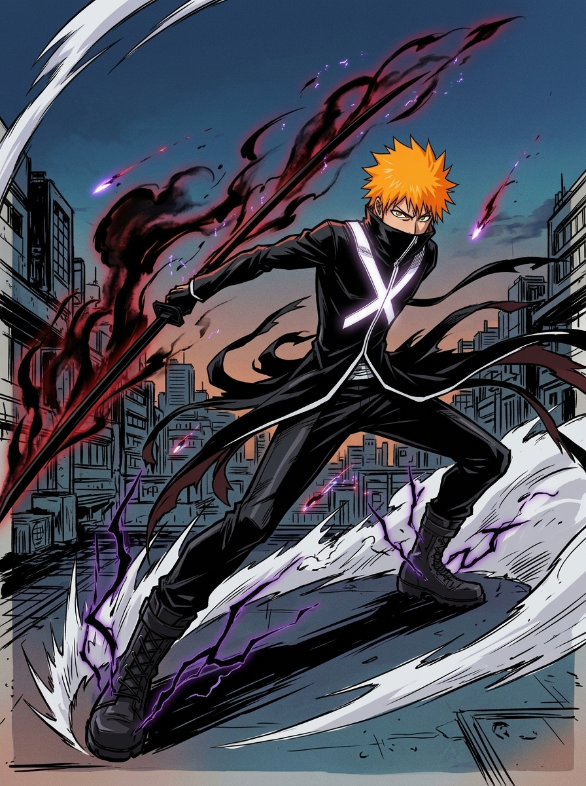
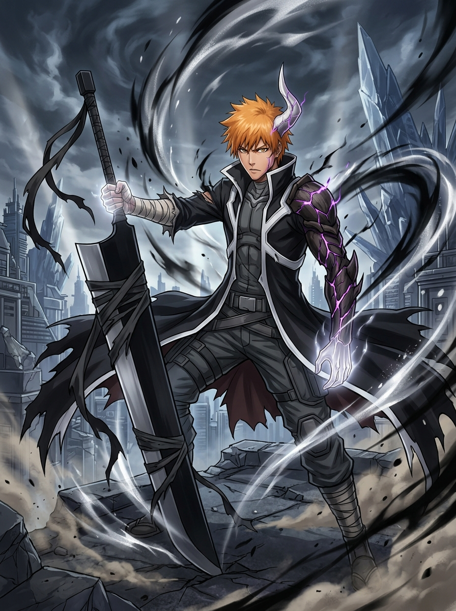

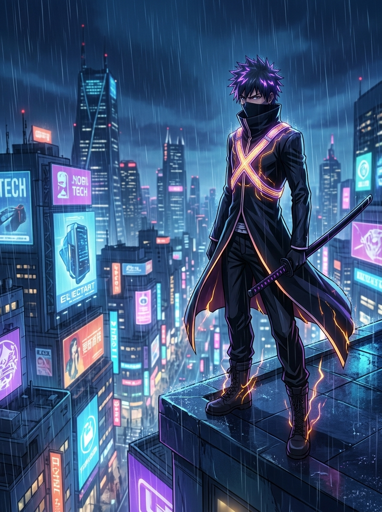
PLANETARY EXTINCTION & ORBITAL SUTURE
Cosmic stabilization in the upper exosphere. Starlight sutures repairing planetary tectonic fault lines and dimensional anomalies.
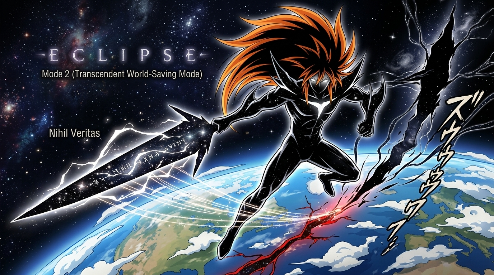
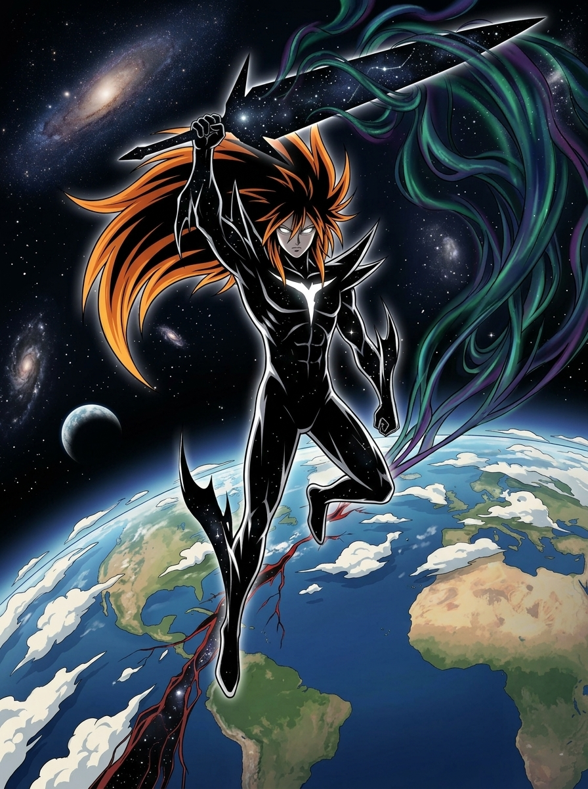
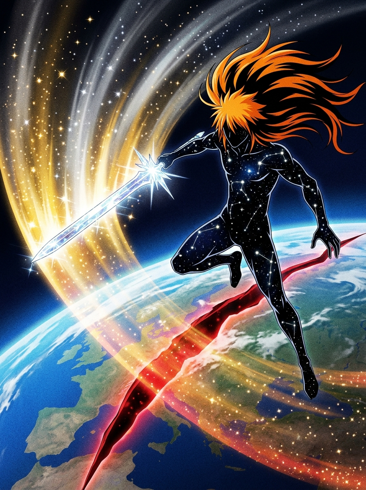
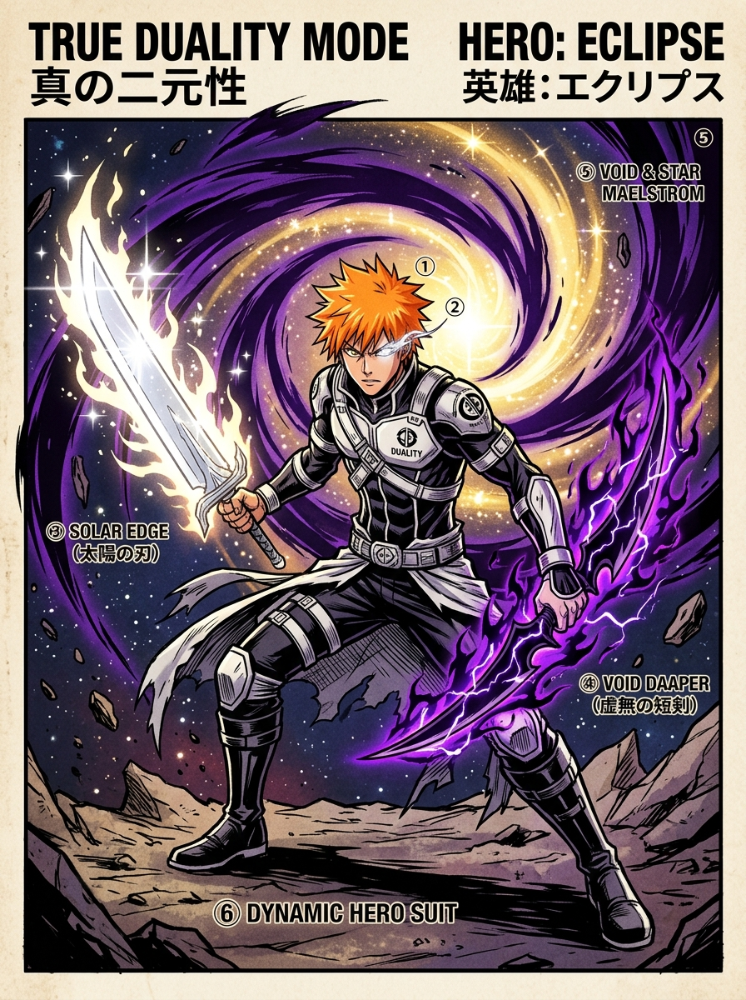
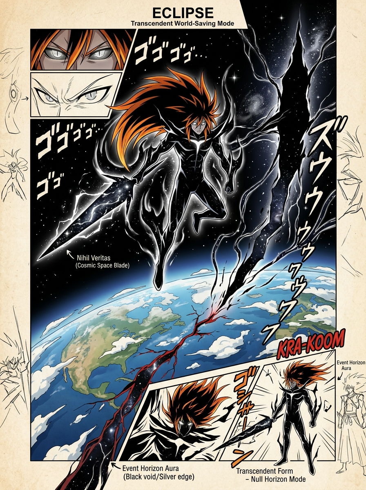
ENGINEERING BLUEPRINTS & COMPONENT ARCHIVES
Complete technical schematics for Kei's two bonded reality-cutting instruments: The Compressed Odachi and Nihil Veritas, alongside internal component engineering.


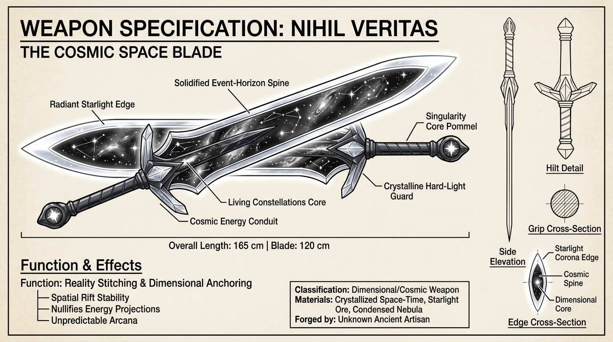